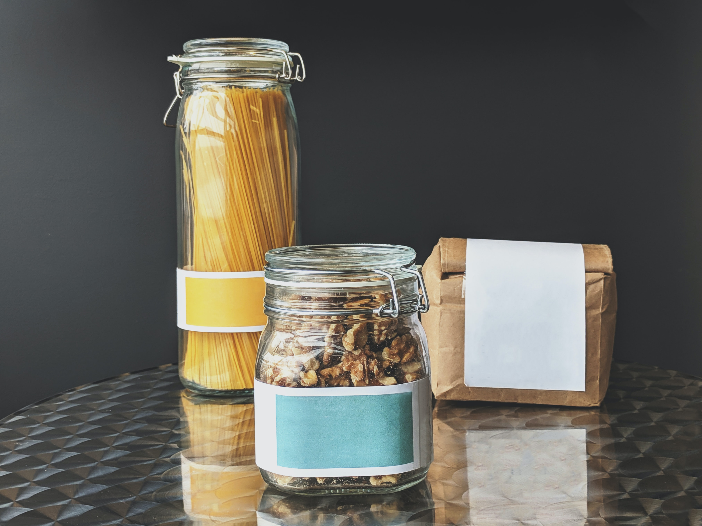

We are a member owned and operated bulk-food buying cooperative in Boulder, Colorado. We aim to give our members affordable access to simple, high quality food. We operate at cost, and keep costs low by doing the work ourselves and buying directly from producers and wholesalers. Our suppliers include Golden Organics, Frontier Co-op, Costco, Equal Exchange, and Conscious Coffees.
Our prices are 30-50% lower than Boulder grocery stores (based on our 2018 price comparison).
Membership
We are democratically governed by our members, and all members share in the economic benefits of the cooperative. Individual members pay a $25 equity share and institutional members pay a $250 equity share (refundable if you later choose to leave). This money supports our operations and allows us to place orders without relying on credit. While non-members can make purchases, they pay higher prices and cannot vote in elections.
Logistics
We coordinate orders via an online platform and require electronic prepayment. Orders are placed every 2 to 8 weeks, depending on the supplier, and delivered to a central location where volunteers receive and sort the products. Everyone is then invited to pick up their orders during designated pickup times.
Place and pay for orders at
foodclub.org/bouldercoopfood.
For a preview, login as username: "guest", password: "password"
General inquiries –
info@bouldercooperativefood.org
Board of Directors –
board@bouldercooperativefood.org
Board of Directors
-
Katherine Hernandez · president, receiverI grew up in Northwest Missouri — in a small town surrounded by corn fields and caves — where my first job (at age 8) was picking up cow patties for 50 cents a bucket. I went on to receive a BS in Biology from Truman State University and a MS in Entomology and Chemical Ecology from the University of North Dakota. I have had a variety of occupations from studying feral hogs, saving sea turtles in Florida, to blacksmithing in the Appalachia. I am currently a PhD student at the University of Colorado Boulder studying insects and working to understand the future of pollinator health, food production, and food security. I currently serve on the board as president and actively learning how to make yogurt.
-
Claudia Thiem · treasurerI live at Wild Sage Cohousing, where I'm a stay-at-home parent, community treasurer, and landscaping team lead. I joined BCF in 2016 to support my bread-baking habit, and somehow got talked into doing the bookkeeping. BCF, in turn, became a gateway to housing advocacy and local politics. I'm on the board of the Boulder Housing Coalition and the leadership team of Boulder Progressives, and write a regular column for the Boulder Daily Camera. Hiking, biking, climbing, and running keep me 'grounded'.
-

Tim Kreuter · officer
-
Register an account
Register your Foodclub account at foodclub.org/bouldercoopfood/registration. For a personal account, use your name as the username (john.doe, KatieSmith); for an organizational account, use the organization's name as the username (picklebric, theBeet). Once approved by an admin, you will be notified by email that you can sign in. -
Edit your settings
Edit settings and contact information at foodclub.org/bouldercoopfood/user_settings. Name, phone, and email should be updated as needed to always point to an appropriate contact person. -
Configure payments
The cooperative uses Stripe to accept payments from both debit/credit cards (2.9% + $0.30 fee) and bank accounts (0.8% fee, $5 max). We suggest paying by bank account to avoid the high credit card fees. Add a bank account to your Foodclub account at foodclub.org/bouldercoopfood/bank_accounts, then follow the directions to verify the bank account using microdeposits (takes 2-3 business days). You can make manual payments or activate automatic payments at foodclub.org/bouldercoopfood/make_payment. Since failure to prepay for your order results in your removal from the order, we strongly encourage activating automatic payments (with option "Auto-pay any negative balance"). -
Place orders
To search for and add items to your order, select a supplier ("Select source") and click "Order", or use the global "Product search". The listed prices do not include markup (22% for members, 32% for non-members) and sales tax (3.86% for food, 8.845% for non-food). The order cycle proceeds as follows:
- Place your order by the deadline.
- Either enable automatic payments or ensure your prepaid balance is equal to (or larger than) your shopping cart total. Both numbers are displayed at the top of the page.
- On the deadline, the order locks automatically.
- An admin generates invoices (only then are they visible to users), triggers prepayments ("pending charges"), and drops users with insufficient balances (and without automatic payments enabled).
- An admin submits the orders to our suppliers.
- Once the items are delivered and our suppliers paid, an admin finalizes the invoices and archives the orders. Sales tax and any price changes or out-of-stock items are automatically applied to user balances.
-
Buy member equity shares
Individual / household membership requires a (refundable) $25 equity share per adult (16+ years old) in a household. If you choose to buy these in installments, please email board@bouldercooperativefood.org with your target number so that we know when to consider you a member. Institutional membership requires a flat (refundable) $250 equity share. You can add shares to your order at foodclub.org/bcf_internal/order_form. Members pay a lower markup (22%) than non-members (32%).
-
Volunteer your time
While our board members are ultimately responsible for keeping the cooperative afloat, our members are encouraged to swoop in to lend a hand:Help shop at Costco (2 hours) – Our Costco shoppers need your help gathering and transporting our gigantic Costco orders! Plus, free samples :)
-
Join the Logistics email group
bcf-logistics@googlegroups.com includes all the bulk buyers that place orders through the cooperative. We use this list to coordinate orders, pickups, and other opportunities. You should receive an email confirming your membership in the group shortly after registering your Foodclub account. If we forget, write us at board@bouldercooperativefood.org. Feel free to reach out to the list for support and to introduce yourself to the other bulk buyers. -
Join the Governance email group – members only
bcf-governance@googlegroups.com includes the elected members of the Board of Directors, members serving on a committee appointed by the board, and any other members interested in participating. We use this list to announce board and committee meetings, circulate meeting notes, and generally to discuss the governance of the cooperative. Members of this group are also granted view access to the cooperative's documents, stored in a Google Drive folder. Interested? Email board@bouldercooperativefood.org. -
Run for the Board – members only
If you want to get more involved, consider running for the board. Board members commit 5-10 hours per month to the smooth and equitable functioning of the cooperative. Board elections are held every April and announced by email to all members.
Bulk suppliers, work trades, and other sources of affordable high-quality goods in the Boulder area (local or by delivery) that we do not order from but that our members have interacted with directly and recommend.
- Top Hat Supply Company (Boulder, CO) – Bulk toilet paper and other janitorial supplies.
- Refill Revolution (Boulder, CO) – Bulk bath, body, and home products.
- Boulder County Farmers Markets (Boulder County, CO) – Markets with promotions for people with food assistance: Double Up for SNAP recipients, WIC, and Fruit & Veg Boulder.
- Uproot Colorado (Boulder County, CO) – Harvest surplus produce from farms and keep a share of the harvest.
- Community Fruit Rescue (Boulder, CO) – Harvest surplus fruit from urban trees and keep a share of the harvest.
- Some Colorado farms offer a partial or full discount on produce shares in exchange for labor (list).
- The Lamb Guys (Douglas, WY) – Bulk lamb or by the cut.
- Penna Olives (Orland, CA) – Bulk olives, in particular fresh olives for home curing.
- Azure Standard (Dufur, OR) – Bulk food and natural products with a regular truck delivery in Boulder, CO.